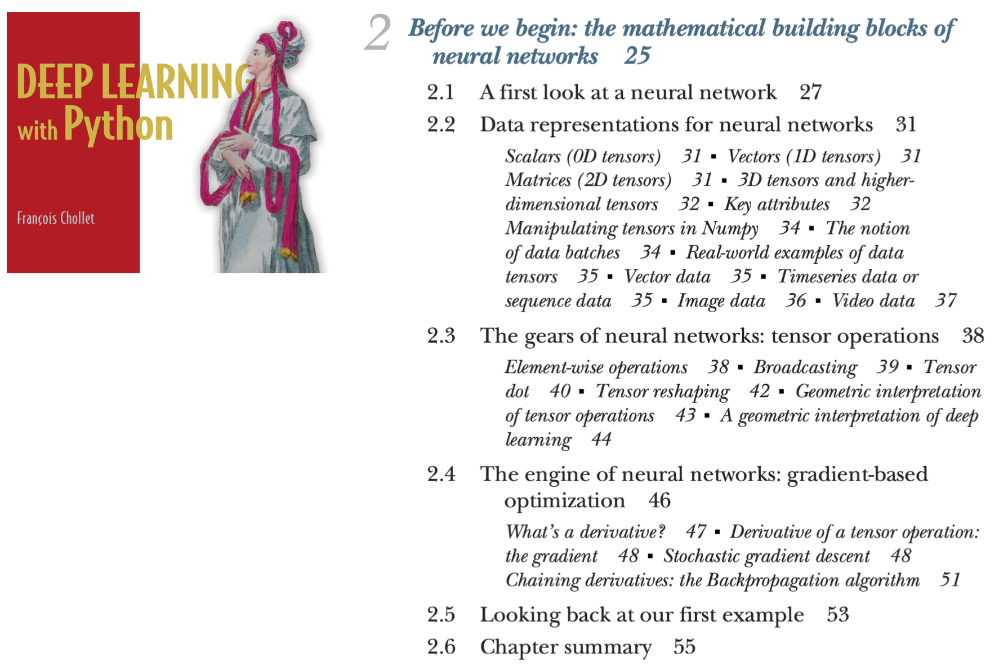
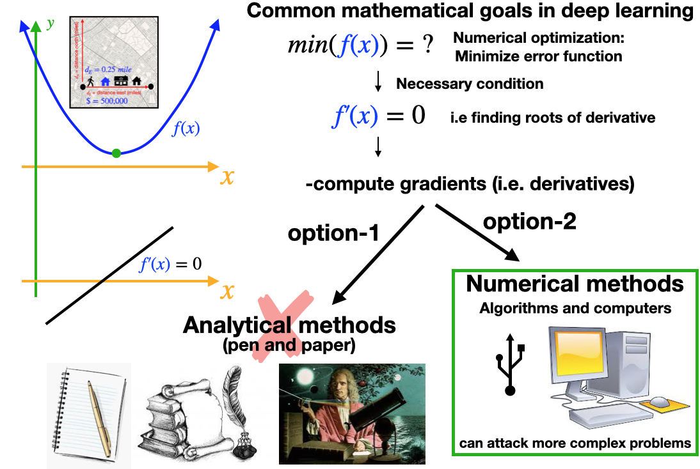
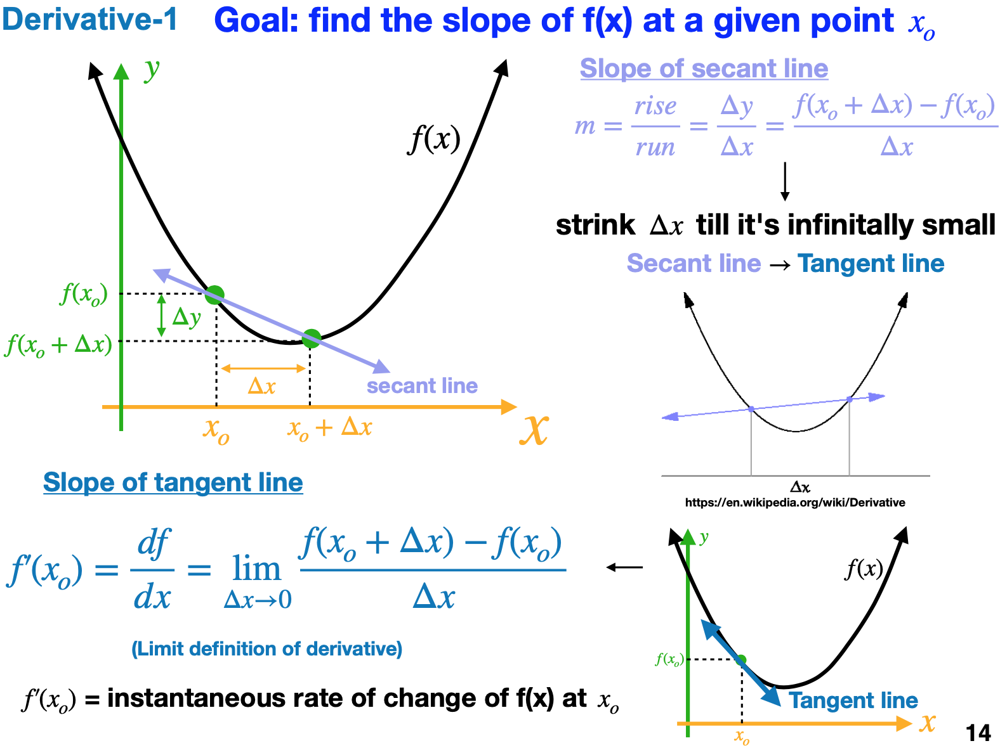
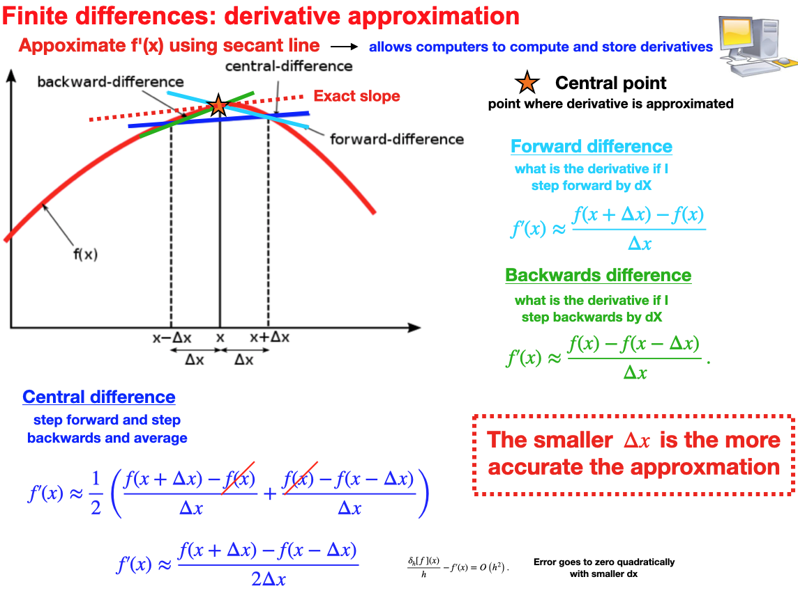
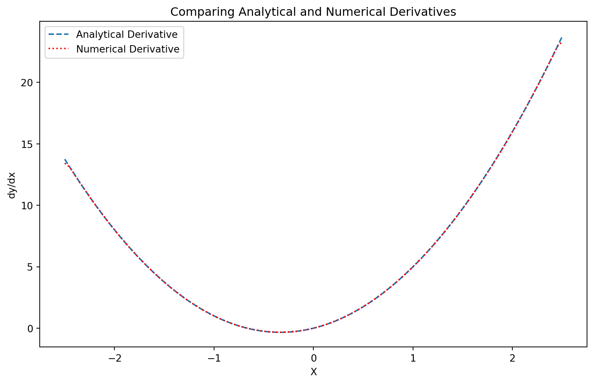
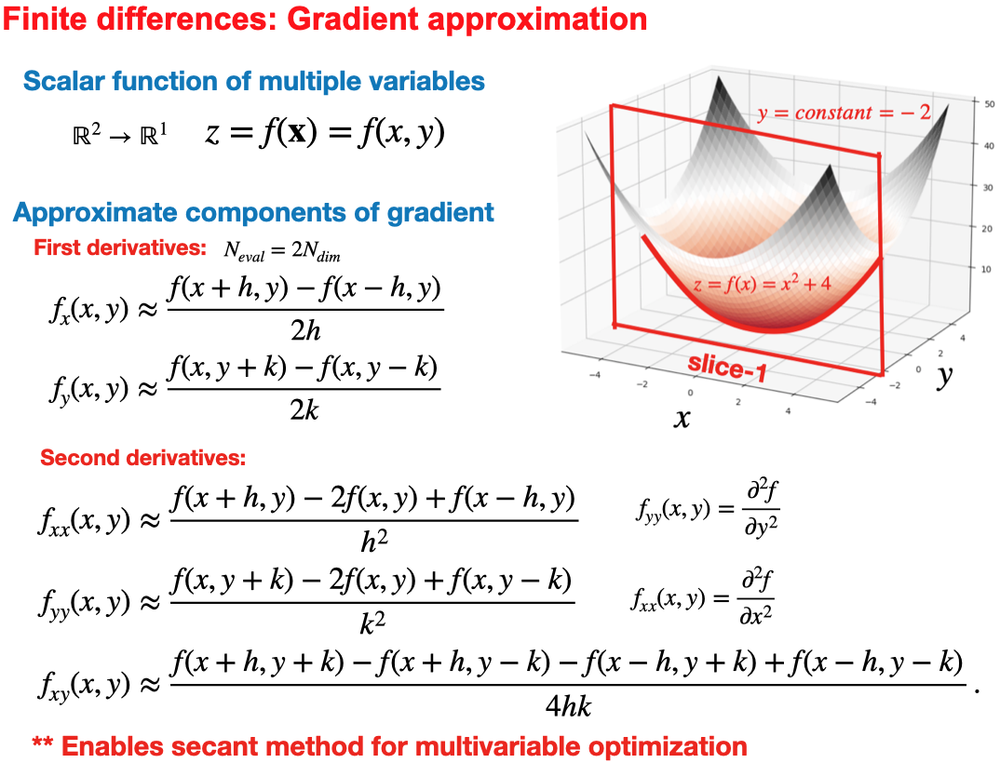
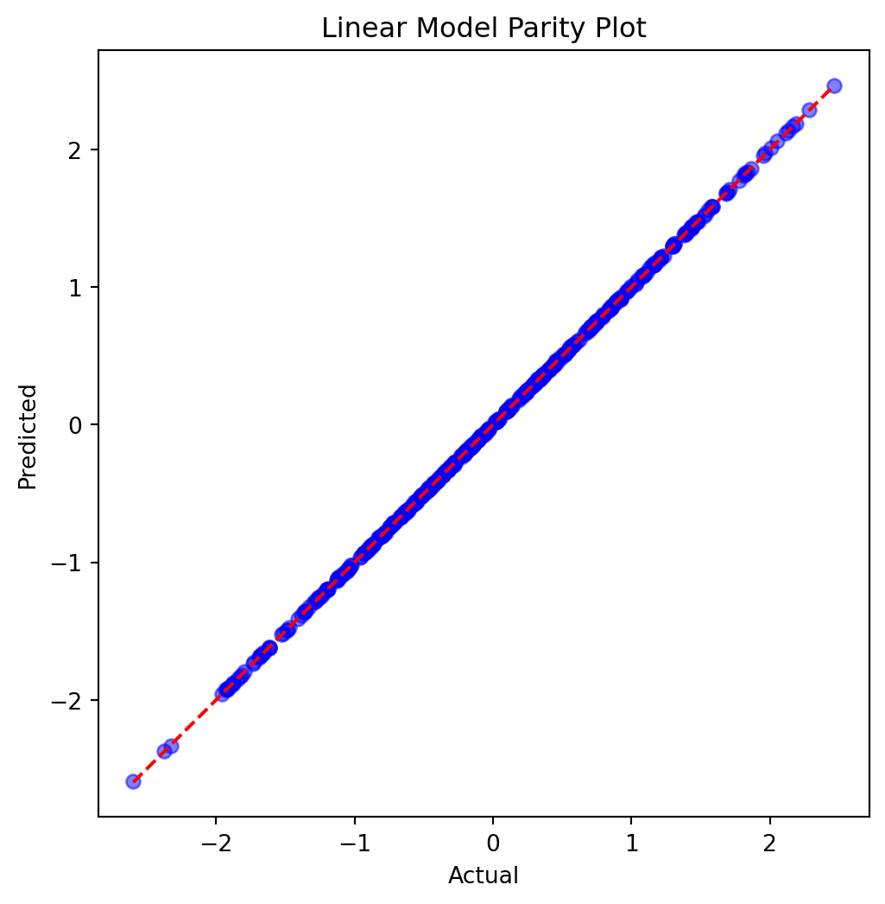
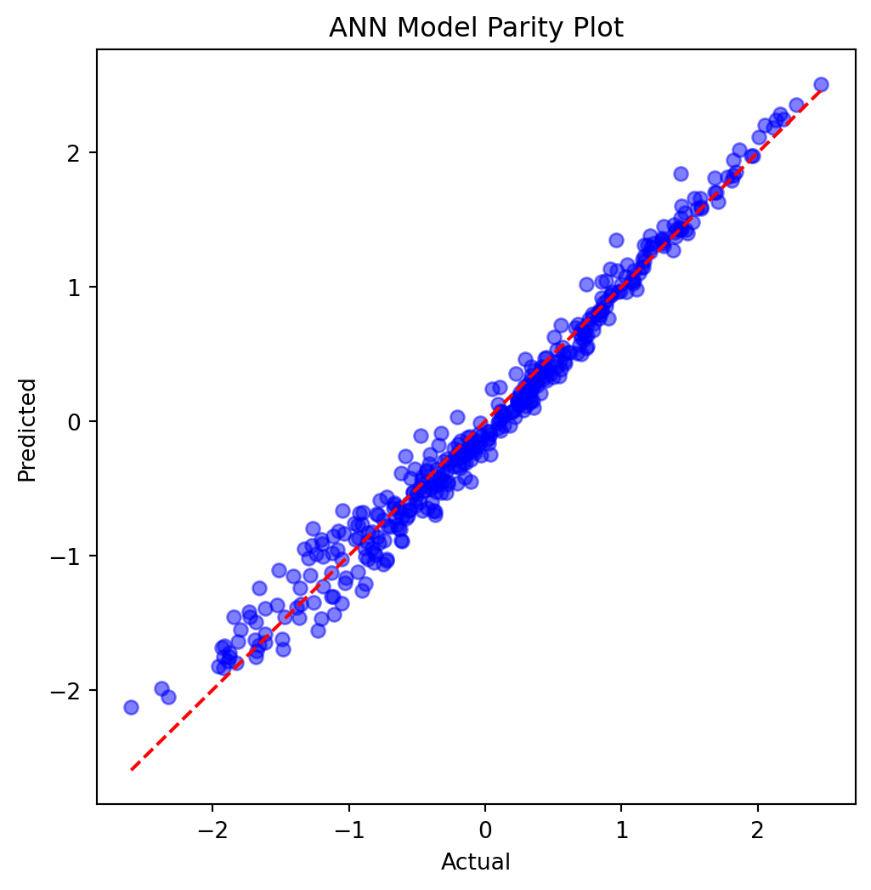
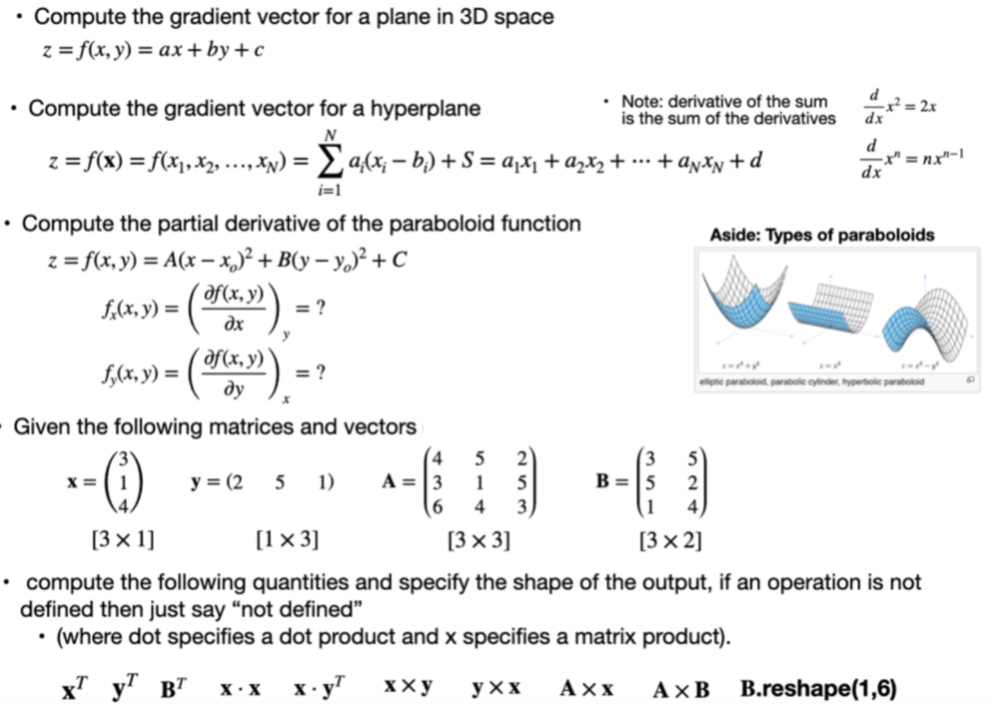

import numpy as np
import matplotlib.pyplot as pltHomework-1:
Author: “J. Hickman”
Neural network training is essentially a multi-variable optimization of a scalar field \[y=f(\mathbf x)=f(x_1,x_2 ... x_N)\]
- The local or global minima or maxima of \(y=f(\mathbf x)=f(x_1,x_2 ... x_N)\) satisfy the condition \(\mathbf \nabla f(x) = 0\) where \(\mathbf \nabla f(x)=(\frac{\partial f}{\partial x_1},\frac{\partial f}{\partial x_2} \dots \frac{\partial f}{\partial x_N})\) is the gradient, i.e. the vector of partial derivatives.
- The most common form of numerical optimizers are “gradient based” methods.
- Such methods “follow” the gradient, i.e. the vector of partial derivatives, ‘downhill’ into local minima in the optimization space.
- Therefore in this homework we focus on some fundamental concepts associated with numerical optimization, including numerical derivatives, solvers, and optimizers.
- We then apply these tools to a simple regression example.
Instructions
- Read and work through all tutorial content and do all exercises below
Submission:
- You need to upload ONE document to Canvas when you are done
- A PDF (or HTML) of the completed form of this notebook
- A PDF (or HTML) of the completed form of this notebook
- IMPORTANT: Please render with
quarto render HW-1.ipynb- (please add
embed-resource: truein the yaml header)
- (please add
- The final uploaded version should NOT have any code-errors present
- All outputs must be visible in the uploaded version, including code-cell outputs, images, graphs, etc
Part-0: Reading
Please read the following chapter in the course textbook if you have not done so already

Part-1: Numerical math
- The point of this section is to
- Get you familiar with a few numerical methods (e.g. numerical differentiation)
Sanity checkyour functions with simple cases where we KNOW the answer beforehand.
Mathematical paradigms
- When performing mathematics, we typically have two options, as demonstrated in the following image.
- Often, it is preferable to take the “numerical” route. In this case we just let the computer do the work for us, rather than computing derivatives or integrals by hand with pen and paper.
- This is the route that will be typically be used in this course, however, during module-1 you will be expected to also do some pen and paper work.

Numerical Derivatives
Given a function \(y=f(x)\), we can compute a derivative, denoted \(f'(x)\), with respect to it’s independent variable \(x\).
The derivative has the meaning of the instantaneous slope of the function at any point point \(x\), i.e. the slope of the tangent line.
We can approximate the tangent line, via the secant line, using any two points on the curve.
The closer the points are, i.e. the smaller \(\Delta x\), the better the approximation.
This idea is summarized in the following image

When functions in the computer are define on a “mesh” of dependent variable locations.
E.g. if the function has time-dependence, the in-dependent variable becomes \(t\) instead of \(x\).
Due to the finite precision (and memory) of a computer, we can only store functions as list, not continuous functions. As demonstrated in the following image

Therefore, the secant line is a typical method for computing a derivative inside computers.
Approximating the derivative with the secant line is also known as the finite difference approximation of the derivative.
Later in the course, we will discuss a more sophisticated and elegant method for computing the derivative, known as “back propagation”. The back-propagation method is more commonly used in deep learning, however, finite differences are easier to understand educationally and are also an important computational tool in many algorithms. Therefore, we will start with finite differences before moving onto back-propagation.
There are several different finite-difference formulas for the first derivative of varying accuracy, as shown in the following image.
For more see: https://en.wikipedia.org/wiki/Finite_difference
IMPORTANT: This method can easily be generalized to compute the gradient (vector of partial derivatives) of multi-variable scalar field.

Assignment-1
- Write a function
def dy_dx(x,y)that takes two numpy arrays x,y where y=f(x)- Returns a vector, of same dimension as x and y, with the first derivative, computed using finite difference
- For dy_dx[0] use forward difference
- for dy_dx[1:N-1] use central difference
- for dy_dx[N] us backward difference
- Note this can be done with three lines in numpy, using a “vectorized” formalism, OR with a for-loop
- Test your function by plotting the derivative of \(f(x)=x^3+x^2\) with both the numerical and analytic solution, where the derivative is \(\frac{df}{dx}=3x^2+2x\)
- IMPORTANT: In ANN training the we compute a different derivative \(\frac{\partial L}{\partial w}\), where \(L\) is the loss surface and \(w\) are the model parameters.
# INSERT CODE HERE
def dy_dx(x, y):
"""Calculate the derivative of y with respect to x using the finite difference.
Args:
x (numpy array): The x values.
y (numpy array): The y values corresponding to f(x).
Returns:
numpy array: The derivatives of y with respect to x.
"""
#create an array to store the derivatives
dy = np.zeros_like(y)
#using methods mentioned above for dy_dx[0], dy_dx[1:N-1], dy_dx[N-1]}
#Forward the differences for the first point
dy[0] = (y[1] - y[0]) / (x[1] - x[0])
#get the central differences for the middle points
dy[1:-1] = (y[2:] - y[:-2]) / (x[2:] - x[:-2])
#backward diff for the last point
dy[-1] = (y[-1] - y[-2]) / (x[-1] - x[-2])
return dy
#test functions and derivatives provided above
def f(x):
return x**3 + x**2
def df_dx(x):
return 3*x**2 + 2*x
x = np.linspace(-2.5, 2.5, 100)
#get vals for y
y = f(x)
analytical_derivative = df_dx(x)
#get vals for numerical derivative
numerical_derivative = dy_dx(x, y)
plt.figure(figsize=(10, 6))
plt.plot(x, analytical_derivative, label='Analytical Derivative', linestyle='--')
plt.plot(x, numerical_derivative, label='Numerical Derivative', linestyle=':', color='r')
plt.title('Comparing Analytical and Numerical Derivatives')
plt.xlabel('X')
plt.ylabel('dy/dx')
plt.legend()
plt.show()
This method can easily be generalized to to compute the partial derivative terms of the gradient.
In the following image h is the step size (i.e. \(h=\Delta x\))

Assignment-2
Sanity check
- The previous sub-assignment computed the derivate at each x-point, however, often we just need to compute the “local” derivative around one x point denoted x0
- Write a python function
def f(x)which returns a multi-variable scalar field \(y=f(\mathbf x)=f(x_1,x_2 ... x_N)\), an arbitrary input dimension N.- For simplicity, just use \(y=f(\mathbf x)=f(x_1,x_2,x_3)=2.718 x_1^2+3.14 x_2+1.0 x_3+2\)
- compute the gradient of this function “by hand” to make sure your numerical implementation matches the analytical result
- Write a function
def grad(f,x0,dx)that;- takes this f function as an input
- see the following link for information on passing a function as an argument to another function.
- https://www.geeksforgeeks.org/passing-function-as-an-argument-in-python/
- Returns the gradient vector, as a numpy array, computed around the point x0 by using the multi-variable finite difference with a step size equal to dx.
- takes this f function as an input
- test the function by computing the gradient vector around \(\mathbf x=(x_1,x_2,x_3)=(1,2,3)\)
# INSERT YOUR CODE HERE
def f(x):
return 2.718 * x[0]**2 + 3.14 * x[1] + 1.0 * x[2] + 2
def grad(f, x0, dx):
gradients = np.zeros_like(x0)
#iterate through the elements of x0
for i in range(len(x0)):
f_diff = []
b_diff = []
for val in x0:
#append the value of x0 + dx to f_diff
f_diff.append(x0[val-1] + dx)
#append the value of x0 - dx to b_diff
b_diff.append(x0[val-1] - dx)
gradient = (f(f_diff) - f(b_diff)) / (2 * dx)
return gradient
x0 = np.array([1, 2, 3]) #test
dx = .0001 #step size
print(f"---both methods returned the gradient as 9.576... with x0 = 1,2,3---\n\n")
#get the numerical gradient
grad_n = grad(f, x0, dx)
print("Numerical Gradient at x0 =", x0, ":", grad_n)
#gradient taken by hand, only 2.718 has an exponent, 3.14 and 1 remain, 2 doesnt have a variable x and is 0
grad_a = np.array([2.718 * 2 * x0[0] + 3.14 + 1.0])
print("Analytical Gradient at x0 =", x0, ":", grad_a)---both methods returned the gradient as 9.576... with x0 = 1,2,3---
Numerical Gradient at x0 = [1 2 3] : 9.57600000000447
Analytical Gradient at x0 = [1 2 3] : [9.576]def compute_gradient(f, p, x, y, epsilon=1e-6):
"""Compute numerical gradient using central difference."""
grad = np.zeros_like(p)
for i in range(len(p)):
p_plus = np.copy(p)
p_minus = np.copy(p)
p_plus[i] += epsilon
p_minus[i] -= epsilon
grad[i] = (f(x, p_plus, y) - f(x, p_minus, y)) / (2 * epsilon)
return gradPart-3: Regression
Assignment-3
Code a multi-variable optimizer (feel free to recycle code if you have done this in other classes)
- The following sub-assignment is a copy of
Lab-1.1, however, you will need to code the optimizer yourself, rather than using the Scipy optimizer. - Copy the regression workflow from your COMPLETED lab-1.1 assignment
- You MUST use the
dataset="5D_LINEAR"; model_type="linear"dataset (but your code should work for any of them) - Replace the SciPy optimizer with your own optimizer function
- Have the optimizer take the objective (loss) function as an argument, along with various default options
def optimizer(objective, algo=‘GD’, LR=0.001, method=‘batch’):
- Code the optimizer so it can train using batch, mini-batch or stochastic paradigms
- For minibatch use a 0.5 batch size
- Code the following optimizers for a general N-dimensional optimization problem (i.e don’t hardcode for a specific dimensionality)
- Gradient decent (GD)
- GD+momentum
- RMSprop
- Nelder-Mead (optional extra credit +2.5 points)
- For gradient based methods compute derivatives numerically using finite difference
IMPORTANT:Add a dense feed forward fully connected neural network option to yourm(x,p)function- code the ANN from scratch using numpy
- choose the network size and activation function yourself, as appropriate for a regression problem
- Train on the dataset using both the ANN and the linear regression model
- Visualize the results for both linear and ANN cases
- Report the loss value for training and validation sets
- A
parity plotwhere you ploty_predvsy_datafor both validation and training data (Note: the line y=x represents a perfect fit) - A “time-series plot” showing “training_error” and “validation_error” as a function of the ith iteration of the optimizer
dataset="5D_LINEAR"
model_type="linear"
# DATA PARAM
N=2000
xmin=-10
xmax=10
def s(x):
return 1/(1 + np.exp(-x))
if(dataset=="2D_LINEAR" or dataset=="2D_LOGISTIC"):
#DEFINE A RANDOM INPUT MATRIX (X) ITH TWO FEATURES
x=np.random.uniform(xmin,xmax,(N,2))
#DEFINE RESPONSE VARIABLES Y USING A LINEAR RESPONSE
noise=np.random.uniform(-1.5,1.5,(N,))
y=1.4*x[:,0]+4.5*x[:,1]+5+noise
y=y.reshape(N,1)
if(dataset=="2D_LOGISTIC"):
#I'm not sure this is necessary, but I added it because it seemed logical
model_type="logistic"
y=s(y)
elif(dataset=="5D_LINEAR"):
#DEFINE A RANDOM INPUT MATRIX (X) ITH TWO FEATURES
x=np.random.uniform(xmin,xmax,(N,5))
#DEFINE RESPONSE VARIABLES Y USING A LINEAR RESPONSE
noise=np.random.uniform(-0.5,0.5,(N,))
y=1.4*x[:,0]+4.5*x[:,1]+3.5*x[:,2]+8.6*x[:,3]-1.5*x[:,4]+5+noise
y=y.reshape(N,1)print(f"Shape of x: {x.shape}")
print(f"Shape of y: {y.shape}")Shape of x: (2000, 5)
Shape of y: (2000, 1)split_idx = int(N*.8)
x_train, x_test = x[:split_idx], x[split_idx:]
y_train, y_test = y[:split_idx], y[split_idx:]
print(f"Training set shape: {x_train.shape, y_train.shape}")
print(f"Test set shape: {x_test.shape, y_test.shape}")Training set shape: ((1600, 5), (1600, 1))
Test set shape: ((400, 5), (400, 1))u_x = np.mean(x_train, axis=0)
sigma_x = np.std(x_train, axis=0)
if model_type == "linear":
u_y = np.mean(y_train)
sigma_y = np.std(y_train)
else:
u_y = 0
sigma_y = 1
x_train = (x_train - u_x) / sigma_x
x_val = (x_test - u_x) / sigma_x
if model_type == "linear":
y_train = (y_train - u_y) / sigma_y
y_val = (y_test - u_y) / sigma_ydef m(x, p, model_type='linear'):
if model_type == 'linear':
p=p.reshape(p.shape[0],1)
z=np.dot(x, p[1:])+p[0]
return z
elif model_type == 'ANN':
"""Artificial Neural Network model with a single hidden layer."""
W1, b1, W2, b2 = p['W1'], p['b1'], p['W2'], p['b2']
Z1 = np.dot(x, W1) + b1
A1 = relu(Z1)
Z2 = np.dot(A1, W2) + b2
return Z2
else:
raise ValueError("Invalid model type. Choose 'linear' or 'ANN'.")
def relu(Z):
"""ReLU activation function."""
return np.maximum(0, Z)def optimizer(objective, params, x_train, y_train, algo='GD', LR=0.001, epochs=100, batch_size=None):
"""
Optimizes model parameters to minimize the objective function.
Parameters:
- objective: The objective (loss) function to minimize.
- params: Initial model parameters.
- x_train: Training input data.
- y_train: Training target data.
- algo: Optimization algorithm ('GD', 'GD_MOMENTUM', 'RMSprop').
- LR: Learning rate.
- epochs: Number of training epochs.
- batch_size: Size of batches for mini-batch training. If None, use full batch.
Returns:
- Optimized parameters.
"""
n_samples = x_train.shape[0]
if batch_size is None or batch_size > n_samples:
batch_size = n_samples # Full batch if batch_size is None or larger than the number of samples
# Initialize velocity for momentum and squared gradient for RMSprop
v = {k: np.zeros_like(v) for k, v in params.items()} if isinstance(params, dict) else np.zeros_like(params)
s = {k: np.zeros_like(v) for k, v in params.items()} if isinstance(params, dict) else np.zeros_like(params)
for epoch in range(epochs):
# Mini-batch or stochastic training
for start in range(0, n_samples, batch_size):
end = start + batch_size
x_batch, y_batch = x_train[start:end], y_train[start:end]
# Compute gradients
grads = compute_gradients(objective, params, x_batch, y_batch)
# Update parameters based on the selected algorithm
if algo == 'GD':
for key in params.keys():
params[key] -= LR * grads[key]
elif algo == 'GD_MOMENTUM':
for key in params.keys():
v[key] = 0.9 * v[key] - LR * grads[key] # Update velocity
params[key] += v[key] # Update parameters
elif algo == 'RMSprop':
for key in params.keys():
s[key] = 0.9 * s[key] + 0.1 * (grads[key] ** 2) # Update squared gradient
params[key] -= LR * grads[key] / (np.sqrt(s[key]) + 1e-7) # Update parameters
return params
def compute_gradients(f, p, dx=1e-5):
grads = {}
if isinstance(p, dict): # For ANN parameters
for key in p.keys():
grad = np.zeros_like(p[key])
for index, _ in np.ndenumerate(p[key]):
p_plus = {k: np.array(v, copy=True) for k, v in p.items()}
p_minus = {k: np.array(v, copy=True) for k, v in p.items()}
p_plus[key][index] += dx
p_minus[key][index] -= dx
loss_plus = f(p_plus) # Evaluate loss at p_plus
loss_minus = f(p_minus) # Evaluate loss at p_minus
grad[index] = (loss_plus - loss_minus) / (2 * dx)
grads[key] = grad
else: # For linear model parameters
grads = np.zeros_like(p)
for i in range(len(p)):
p_plus = np.array(p, copy=True)
p_minus = np.array(p, copy=True)
p_plus[i] += dx
p_minus[i] -= dx
loss_plus = f(p_plus) # Evaluate loss at p_plus
loss_minus = f(p_minus) # Evaluate loss at p_minus
grads[i] = (loss_plus - loss_minus) / (2 * dx)
return gradsdef train_model(x_train, y_train, x_val, y_val, model, optimizer, params_init, epochs, learning_rate, algo='GD', momentum=0.9, beta=0.99, epsilon=1e-8):
params = params_init.copy() # Start with initial parameters
# Initialize optimization variables differently for dict (ANN) and array (linear)
v, s = (dict(), dict()) if isinstance(params, dict) else (np.zeros_like(params), np.zeros_like(params))
for epoch in range(epochs):
# Define a lambda function that computes the loss using 'x_train' and 'y_train'
objective_function = lambda p: mse_loss(model(x_train, p), y_train)
# Compute gradients using the objective function
grads = compute_gradients(objective_function, params, dx=1e-5)
if algo == 'GD':
# Standard Gradient Descent update
if isinstance(params, dict): # For ANN
for key in params.keys():
params[key] -= learning_rate * grads[key]
else: # For linear model
params -= learning_rate * grads
elif algo == 'GD_MOMENTUM':
# Gradient Descent with Momentum update
if isinstance(params, dict): # For ANN
for key in params.keys():
v[key] = momentum * v[key] - learning_rate * grads[key] # Update velocity
params[key] += v[key] # Update parameters
else: # For linear model
v = momentum * v - learning_rate * grads
params += v
elif algo == 'RMSprop':
# RMSprop update
if isinstance(params, dict): # For ANN
for key in params.keys():
s[key] = beta * s[key] + (1 - beta) * (grads[key] ** 2) # Update squared gradient
params[key] -= learning_rate * grads[key] / (np.sqrt(s[key]) + epsilon) # Update parameters
else: # For linear model
s = beta * s + (1 - beta) * (grads ** 2)
params -= learning_rate * grads / (np.sqrt(s) + epsilon)
# Optionally, print the loss every 100 epochs or at the last epoch
if epoch % 100 == 0 or epoch == epochs - 1:
train_loss = mse_loss(model(x_train, params), y_train)
val_loss = mse_loss(model(x_val, params), y_val)
print(f"Epoch {epoch}: Training Loss = {train_loss}, Validation Loss = {val_loss}")
return params
def mse_loss(y_pred, y_true):
"""Mean Squared Error loss."""
return np.mean((y_pred - y_true) ** 2)def initialize_parameters(n_features, model_type='linear', hidden_layers_sizes=None):
"""
Initializes parameters for the specified model type.
Parameters:
- n_features: The number of features in the input data.
- model_type: The type of model ('linear' or 'ANN').
- hidden_layers_sizes: A list containing the sizes of each hidden layer for the ANN model.
Returns:
- The initialized parameters. For linear models, this is a NumPy array.
For ANNs, this is a dictionary containing weights and biases for each layer.
"""
if model_type == 'linear':
# Initialize parameters for linear regression model
params = np.random.randn(n_features + 1) * 0.01 # Small random values for weights and bias
elif model_type == 'ANN':
if hidden_layers_sizes is None:
raise ValueError("hidden_layers_sizes must be provided for ANN model type")
params = {}
layer_sizes = [n_features] + hidden_layers_sizes + [1] # Adding input and output layer sizes
# Initialize weights and biases for each layer in the ANN
for l in range(1, len(layer_sizes)):
params['W' + str(l)] = np.random.randn(layer_sizes[l-1], layer_sizes[l]) * np.sqrt(2. / layer_sizes[l-1]) # He initialization
params['b' + str(l)] = np.zeros((1, layer_sizes[l]))
else:
raise ValueError("Invalid model type. Choose 'linear' or 'ANN'.")
return paramsimport matplotlib.pyplot as plt
def plot_parity(y_pred, y_true, title='Parity Plot'):
plt.figure(figsize=(6, 6))
plt.scatter(y_true, y_pred, color='blue', alpha=0.5)
plt.plot([y_true.min(), y_true.max()], [y_true.min(), y_true.max()], 'r--')
plt.xlabel('Actual')
plt.ylabel('Predicted')
plt.title(title)
plt.show()
def plot_loss(losses):
plt.figure(figsize=(10, 6))
plt.plot(losses, label='Training Loss')
plt.xlabel('Epoch')
plt.ylabel('Loss')
plt.title('Training Loss Over Time')
plt.legend()
plt.show()# Training parameters
epochs = 1000
learning_rate = 0.01
algo = 'GD' # Change to 'GD+momentum' or 'RMSprop' as needed
model_type = 'linear'
params_linear = initialize_parameters(n_features=5, model_type=model_type)
trained_params_linear = train_model(x_train, y_train, x_val, y_val, lambda x, p: m(x, p, model_type), optimizer, params_linear, epochs, learning_rate, algo=algo)
y_pred_train_linear = m(x_train, trained_params_linear, model_type)
y_pred_val_linear = m(x_val, trained_params_linear, model_type)
plot_parity(y_pred_val_linear, y_val, title='Linear Model Parity Plot')Epoch 0: Training Loss = 0.9687738974083954, Validation Loss = 0.9309599814603539
Epoch 100: Training Loss = 0.015377774088813996, Validation Loss = 0.014628631772032996
Epoch 200: Training Loss = 0.0002721199424217459, Validation Loss = 0.00024342065579544838
Epoch 300: Training Loss = 2.6445985391341408e-05, Validation Loss = 2.239989091865402e-05
Epoch 400: Training Loss = 2.2334955005649024e-05, Validation Loss = 2.0267796030500923e-05
Epoch 500: Training Loss = 2.2263963126991968e-05, Validation Loss = 2.043246805291481e-05
Epoch 600: Training Loss = 2.226269345264172e-05, Validation Loss = 2.0461568023220304e-05
Epoch 700: Training Loss = 2.2262669844851734e-05, Validation Loss = 2.0465500941146882e-05
Epoch 800: Training Loss = 2.2262669387026018e-05, Validation Loss = 2.0466015837657636e-05
Epoch 900: Training Loss = 2.2262669377750394e-05, Validation Loss = 2.0466082803649988e-05
Epoch 999: Training Loss = 2.2262669377554387e-05, Validation Loss = 2.0466091454100495e-05
# Training parameters
epochs = 1000
learning_rate = 0.01
algo = 'GD' # Change to 'GD+momentum' or 'RMSprop' as needed
# Training and Testing for ANN Model
model_type = 'ANN'
params_ann = initialize_parameters(n_features=5, model_type=model_type, hidden_layers_sizes=[10])
trained_params_ann = train_model(x_train, y_train, x_val, y_val, lambda x, p: m(x, p, model_type), optimizer, params_ann, epochs, learning_rate, algo=algo)
y_pred_train_ann = m(x_train, trained_params_ann, model_type)
y_pred_val_ann = m(x_val, trained_params_ann, model_type)
plot_parity(y_pred_val_ann.flatten(), y_val.flatten(), title='ANN Model Parity Plot') # Flatten if necessaryEpoch 0: Training Loss = 3.136515263778554, Validation Loss = 3.0147646404668365
Epoch 100: Training Loss = 0.2608823597177453, Validation Loss = 0.25855482018429404
Epoch 200: Training Loss = 0.16289813355959187, Validation Loss = 0.16501002772995027
Epoch 300: Training Loss = 0.12231880471486477, Validation Loss = 0.12487242762791456
Epoch 400: Training Loss = 0.09574512552281014, Validation Loss = 0.09837956647605313
Epoch 500: Training Loss = 0.07478420037905568, Validation Loss = 0.07791543049584096
Epoch 600: Training Loss = 0.05750942126455804, Validation Loss = 0.06136479042120874
Epoch 700: Training Loss = 0.04366309153507708, Validation Loss = 0.04802055877793309
Epoch 800: Training Loss = 0.033079713417556056, Validation Loss = 0.03739008215879078
Epoch 900: Training Loss = 0.025172705789064154, Validation Loss = 0.029235280793957975
Epoch 999: Training Loss = 0.01960432069600253, Validation Loss = 0.023132311666350224
Part-4: Analytical
Assignment-4
- Note: feel free to recycle solutions if you have done this in other classes
- Work through the following math problems relevant to deep learning (show your work and all steps)
- You can do this either by (1) doing the math inside
.ipynbusing LaTex (recommended) OR (2) doing it with pen and paper, taking photographs, and embedding the solutions into the.ipynbas images.

Assignment-5
- Linear least squares (LLS):
Single-variable - Use Calculus to analytically derive the expression for single variable linear regression fitting parameters using the sum of square error as the loss function (show your work).
- That is, do the mathematical optimization problem by hand rather than with a computer \[ \begin{aligned} & \text { Model: } y=M(x \mid \mathbf{p})=m x+b \,\,\,\, \mathbf{p}=\left(p_0, p_1\right)=(m, b) \\ & \text { Loss surface: } L(\mathbf{p})=L(m, b)=\sum_{i=1}^N\left(\hat{y}_i-M\left(\hat{x}_i, m, b\right)\right)^2 \\ & \end{aligned} \]
Solution:
\[ \begin{aligned} & m=\frac{\operatorname{cov}(x, y)}{\operatorname{var}(x)} \quad \bar{x}=\frac{1}{N} \sum_{i=1}^N x_i \quad \operatorname{var}(X)=\frac{1}{N} \sum_{i=1}^n\left(x_i-\bar{x}\right)^2 \\ & b=\bar{y}-\frac{\operatorname{cov}(x, y)}{\operatorname{var}(x)} \bar{x} \quad \bar{y}=\frac{1}{N} \sum_{i=1}^N y_i \quad \operatorname{cov}(X, Y)=\frac{1}{N} \sum_{i=1}^n\left(x_i-\bar{x}\right)\left(y_i-\bar{y}\right) \\ & \end{aligned} \]
Assignment-6
- Linear least squares (LLS):
Multi-variable - Use matrix calculus to analytically derive the expression for two variable linear regression fitting parameters using the sum of square error as the loss function
- Show your work using matrix notation
- From your solution infer the generalized solution for an arbitrary number of variables
- solution: \(\quad \vec{w}=\left(X^{\top} X\right)^{-1} X^{\top} Y\).